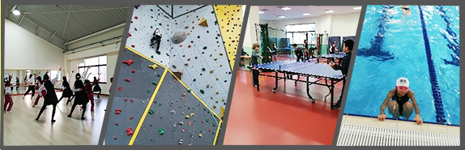

双语部2018秋课后社团班招生说明书
- 一、家长及小朋友可根据自己的兴趣爱好，自由选择课程报名参加 ,社团分为运动类、艺文类和综合类(有名额上限，都是线上报名，额满为止，报名缴费完成才算报名成功。)
- 二、学生一旦选定社团之后不再接受换班，家长可以根据孩子时间选课，课后社团本学期每周一~周五都有开班。选课时间不可冲突，例如周一不能选两项。
- 三、住宿生须知
1.本年度为安排住宿生留宿期间照顾，特排定必选2天社团，住宿生选取课后社团优惠1000元。除了两天的运动社团，以外时间可再自费报名其他时段社团。
2.由于这学期我们是线上选课，金额都是系统价格，住宿生缴费按照系统全额缴费，事后返还优惠政策。
- 四、课后社团开通交通车
1．本学期课后社团仍为大家开通交通车。交通车限花桥线，交通车按天选择，例如选周一（包含整个学期的周一），一天380元，可依据需要选择搭乘交通车的天数，费用可以在系统上面直接选择周几要坐校车。
2.报名坐校车的孩子课后社团结束后在混接区等候校车，如特殊情况不坐校车的需要提前跟校车老师请假。
- 五、社团费用
下学期课后社团上课共19周，较上学期16周节次增多，但费用比例相同。课后活动备有点心以照顾孩童生长阶段营养需求。
- 六、按日选课
本期课后社团除了高阶班为绑定课程，不可分开选课。其他课程为一天一选课，建议每周选两天学习成效最好。
- 七、因疾病管制请假
自愿不到课或任何原因请假不退费。退费计算比例如下(住宿生运动社团优惠价不退费)：1、开课前：退还80%。2、开课后不再接受退费。如有特殊情况例如疾病管制停課，按照比例退费不予補課，一次课退50元。
- 八、上课须知
1. 运动过程中有可能发生受伤之情况。
2. 参加社团班训练应遵守社团相关守则。
3. 社团课上课前请于上课前五分钟着装完毕准时至规定场地点名，社团班老师会确认学生是否到场。若无法到课请家长至少提前一天来电跟班主任或者活动中心请假，特殊情况的当天14:30前告知班主任或活动中心；若有违反规定或影响其他同学学习权益之行为时，经指导老师反应，通知家长3次以上，则取消参加活动资格。
4．课后社团训练结束由生辅老师或自接家长管理，本学期课后社团时间为16:30-18:00，放学之后自接孩子统一在连廊接回，住宿学生至餐厅用餐，用餐完后进行晚间自习；如违反校规、运动规范与宿管规定将会取消社团一切活动，并按校规惩处。
5、课后社团个人使用之球具、耗材等器材等学校提供，个别社团需要学生自备。
- 九、晚接收费标准
1.课后社团18:00放学，家长需要18:00前到达学校等候孩子放学，18:25之后才来接孩子的家长请到活动中心（在教学楼3楼1332室接走孩子并签名）我们会有以下标准
2.超过18:30-19:30按照1小时收取费用，费用为50元，期间不满一个小时的按照一个小时计算
3.19:30-20:30每超过半个小时收取费用30元，不满半个小时的按照半个小时计算，超过半个小时的按照一个小时计算（1小时60元）
- 十、运动社团需消耗体力，参加社团孩子必须没有痼疾致使不能激烈运动，例如受伤，疾病等，参加游泳社团的孩子不能长疣。
- 十一、由于班次、种类及内容多样性，特补充说明如下，敬请参阅，本次活动最终解释权归双语部活动中心
若有任何疑问，欢迎向双语部活动中心咨询：
厉伟莉老师（0512-82696647）
唐飞燕老师（0512-82696648）
王晓鑫老师（0512-82696649）
